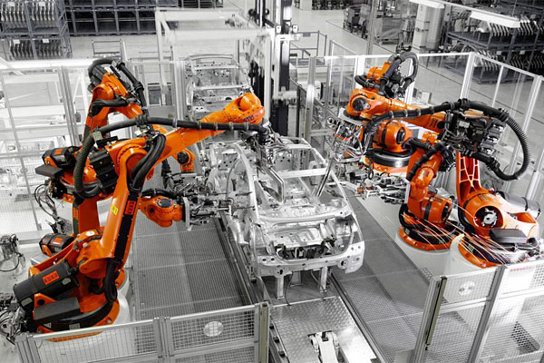
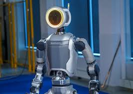

Grundlagen der Robotik
Robotik befasst sich mit dem Entwurf, Bau und Betrieb von Robotern, die physische Aufgaben in der realen Welt ausführen.
- ⚙️ Mechanik: Der physische Körper und die Bewegungsfähigkeit.
- 🔌 Sensorik: Wahrnehmung der Umgebung durch Kameras und Laser.
- 💻 Steuerung: Das "Gehirn", das Befehle in Bewegung umsetzt.



Einsatzgebiete der modernen Robotik
Industrie
Präzise Fertigung, Schweißen und Montage in der Automobilbranche.
Logistik
Autonome Transportsysteme in Warenlagern (z.B. Amazon-Bots).
Service
Reinigungsroboter, Rasenmäher oder Unterstützung in der Pflege.